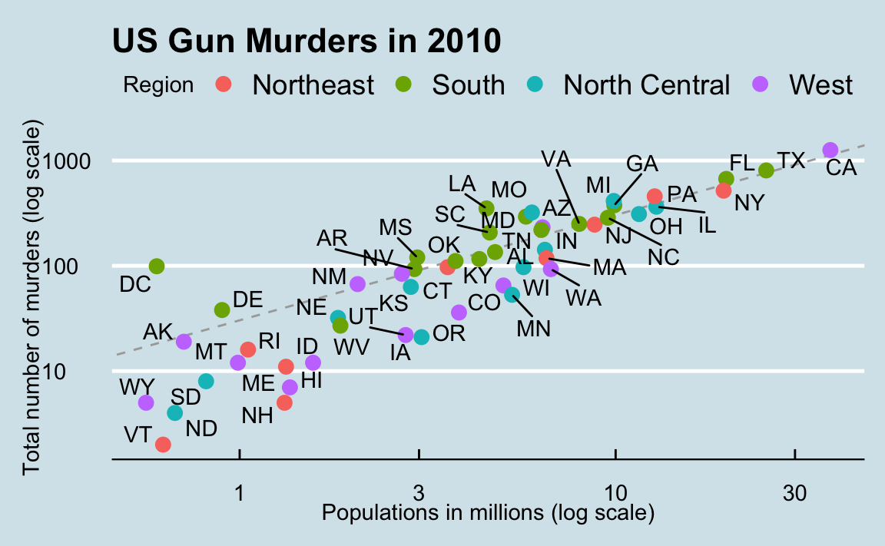
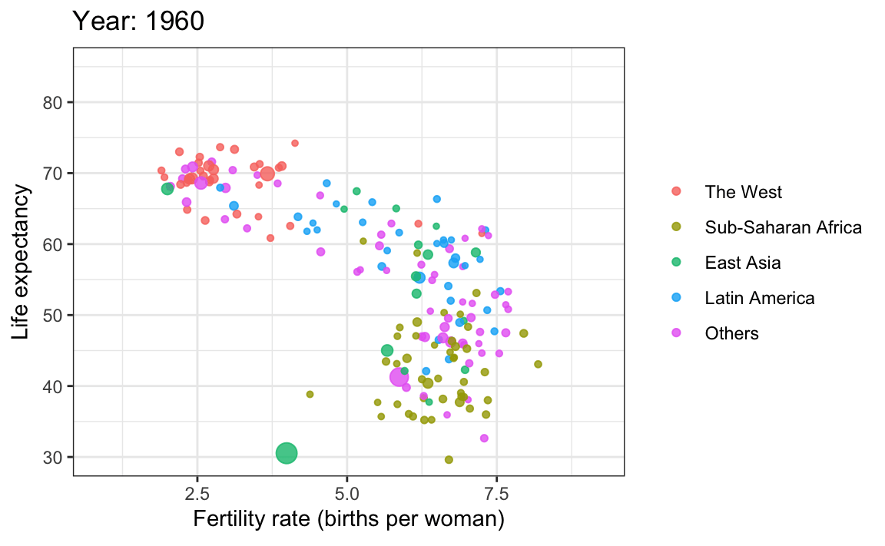

Data Visualization
Looking at the numbers and character strings that define a dataset is rarely useful. To convince yourself, print and stare at the US murders data table:
What do you learn from staring at this table? How quickly can you determine which states have the largest populations? Which states have the smallest? How large is a typical state? Is there a relationship between population size and total murders? How do murder rates vary across regions of the country? For most human brains, it is quite difficult to extract this information just by looking at the numbers. In contrast, the answer to all the questions above are readily available from examining this plot:

We are reminded of the saying “a picture is worth a thousand words”. Data visualization provides a powerful way to communicate a data-driven finding. In some cases, the visualization is so convincing that no follow-up analysis is required.
The growing availability of informative datasets and software tools has led to increased reliance on data visualizations across many industries, academia, and government. A salient example is news organizations, which are increasingly embracing data journalism and including effective infographics as part of their reporting.
A particularly effective example is a Wall Street Journal article1 showing data related to the impact of vaccines on battling infectious diseases. One of the graphs shows measles cases by US state through the years with a vertical line demonstrating when the vaccine was introduced.
Another striking example comes from a New York Times chart2, which summarizes scores from the NYC Regents Exams. As described in the article3, these scores are collected for several reasons, including to determine if a student graduates from high school. In New York City you need a 65 to pass. The distribution of the test scores forces us to notice something somewhat problematic:
The most common test score is the minimum passing grade, with very few scores just below the threshold. This unexpected result is consistent with students close to passing having their scores bumped up.
This is an example of how data visualization can lead to discoveries which would otherwise be missed if we simply subjected the data to a battery of data analysis tools or procedures. Data visualization is the strongest tool of what we call exploratory data analysis (EDA). John W. Tukey4, considered the father of EDA, once said,
“The greatest value of a picture is when it forces us to notice what we never expected to see.”
Many widely used data analysis tools were initiated by discoveries made via EDA. EDA is perhaps the most important part of data analysis, yet it is one that is often overlooked.
Data visualization is also now pervasive in philanthropic and educational organizations. In the talks New Insights on Poverty5 and The Best Stats You’ve Ever Seen6, Hans Rosling forces us to notice the unexpected with a series of plots related to world health and economics. In his videos, he uses animated graphs to show us how the world is changing and how old narratives are no longer true.

It is also important to note that mistakes, biases, systematic errors and other unexpected problems often lead to data that should be handled with care. Failure to discover these problems can give rise to flawed analyses and false discoveries. As an example, consider that measurement devices sometimes fail and that most data analysis procedures are not designed to detect these. Yet these data analysis procedures will still give you an answer. The fact that it can be difficult or impossible to notice an error just from the reported results makes data visualization particularly important.
In this part of the book, we will learn the basics of data visualization and exploratory data analysis by using three motivating examples. We will use the ggplot2 package to code. To learn the very basics, we will start with a somewhat artificial example: heights reported by students. Then we will cover the two examples mentioned above: 1) world health and economics and 2) infectious disease trends in the United States.
Of course, there is much more to data visualization than what we cover here. The following are references for those who wish to learn more:
- ER Tufte (1983) The visual display of quantitative information. Graphics Press.
- ER Tufte (1990) Envisioning information. Graphics Press.
- ER Tufte (1997) Visual explanations. Graphics Press.
- WS Cleveland (1993) Visualizing data. Hobart Press.
- WS Cleveland (1994) The elements of graphing data. CRC Press.
- A Gelman, C Pasarica, R Dodhia (2002) Let’s practice what we preach: Turning tables into graphs. The American Statistician 56:121-130.
- NB Robbins (2004) Creating more effective graphs. Wiley.
- A Cairo (2013) The functional art: An introduction to information graphics and visualization. New Riders.
- N Yau (2013) Data points: Visualization that means something. Wiley.
We also do not cover interactive graphics, a topic that is too advanced for this book. Some useful resources for those interested in learning more can be found below:
http://graphics.wsj.com/infectious-diseases-and-vaccines/?mc_cid=711ddeb86e↩︎
http://graphics8.nytimes.com/images/2011/02/19/nyregion/19schoolsch/19schoolsch-popup.gif↩︎
https://www.nytimes.com/2011/02/19/nyregion/19schools.html↩︎
https://en.wikipedia.org/wiki/John_Tukey↩︎
https://www.ted.com/talks/hans_rosling_reveals_new_insights_on_poverty?language=en↩︎
https://www.ted.com/talks/hans_rosling_shows_the_best_stats_you_ve_ever_seen↩︎